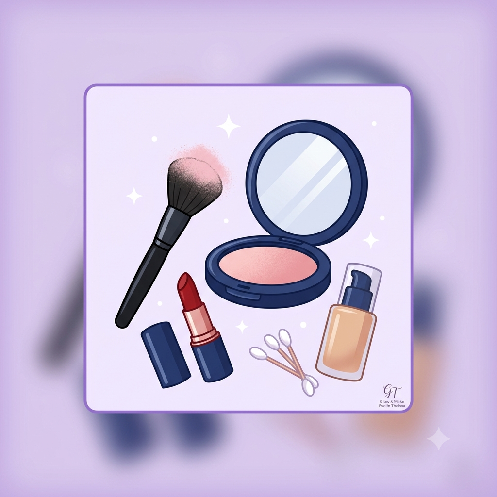
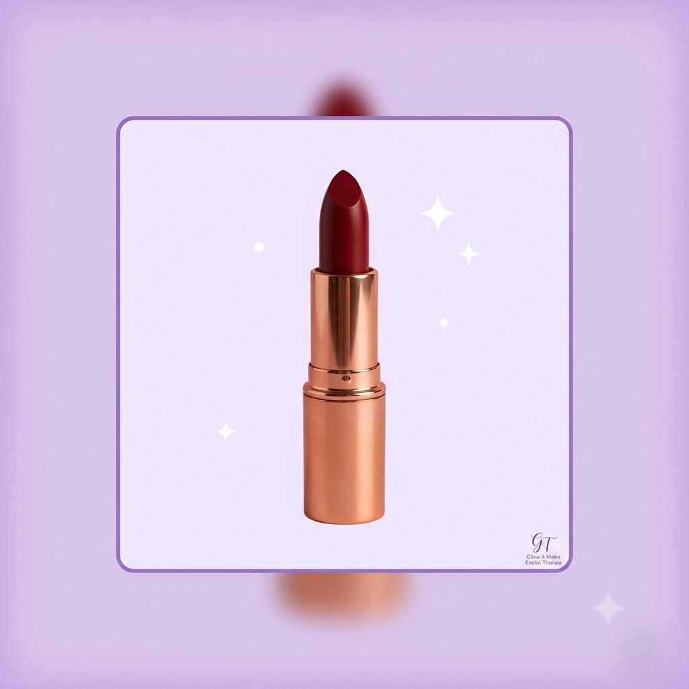
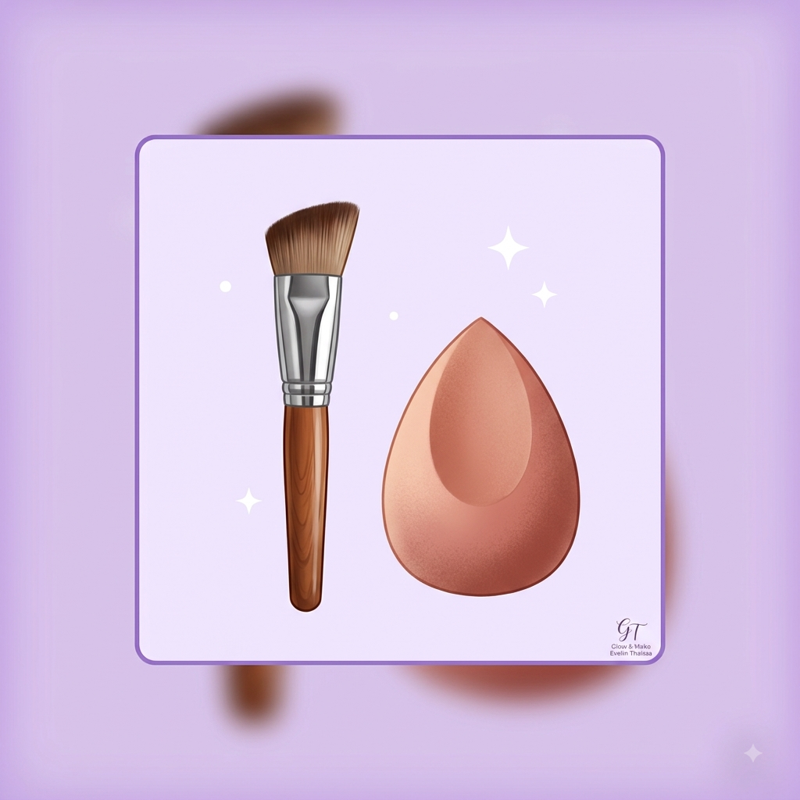
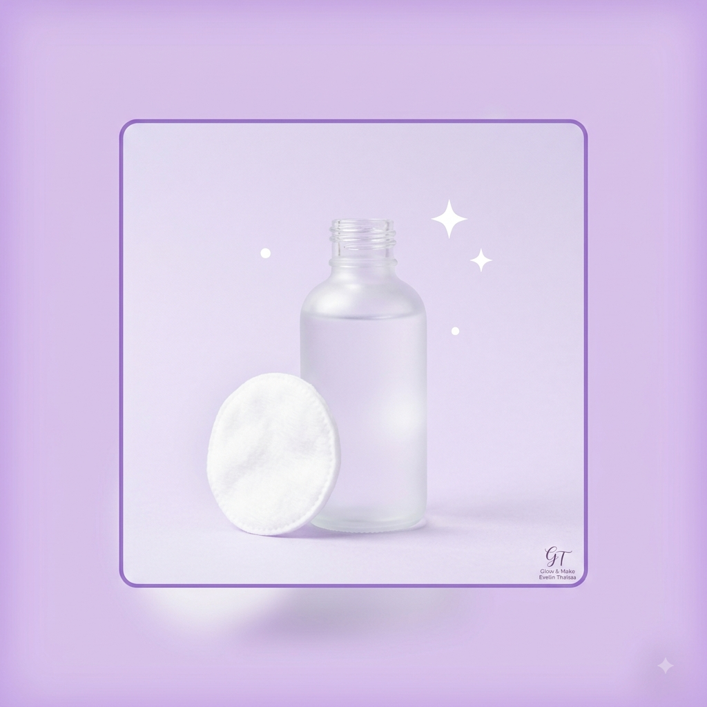
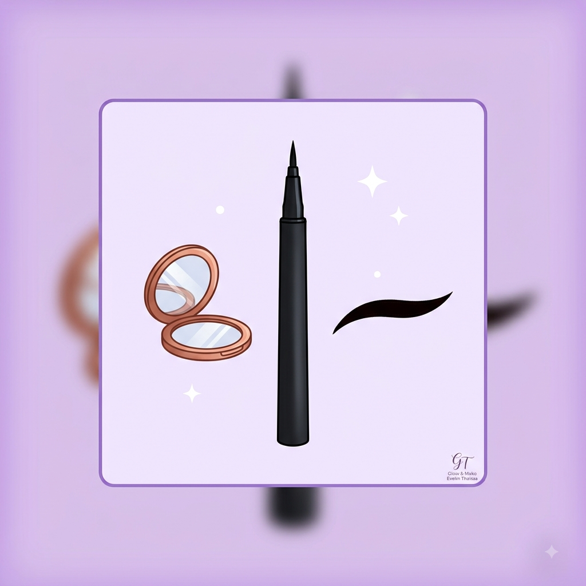
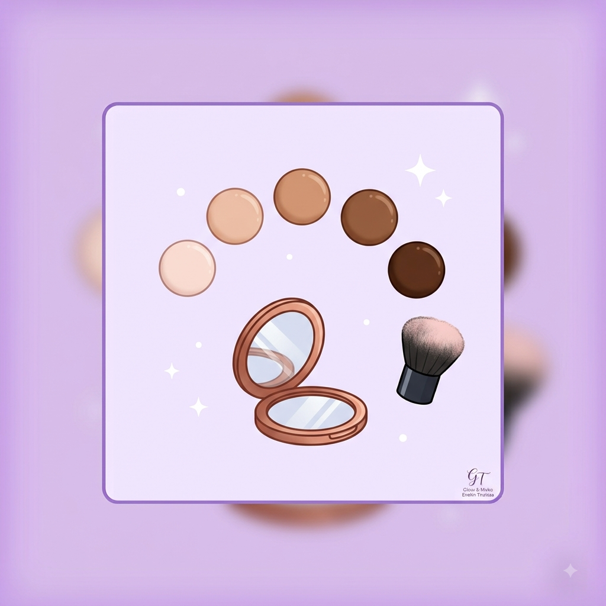

Boas-vindas ao meu blog!
Por: Evelin Thaissa
Olá! Este é o meu espaço para compartilhar segredos de beleza, resenhas de produtos e tutoriais incríveis de maquiagem para o dia a dia.
Compartilhando dicas, truques e curiosidades do mundo da maquiagem!

Por: Evelin Thaissa
Olá! Este é o meu espaço para compartilhar segredos de beleza, resenhas de produtos e tutoriais incríveis de maquiagem para o dia a dia.

Por: Evelin Thaissa
Você sabia que o batom vermelho é usado há milênios? Na antiga Mesopotâmia, pedras preciosas moídas eram usadas nos lábios para dar cor e destacar o sorriso.
Fonte: História da Moda

Por: Evelin Thaissa
A esponja úmida deixa o acabamento da base super leve e natural. Já o pincel cabuki oferece maior cobertura. O truque é usar a esponja para dar o acabamento final!
Fonte: Dicas de Beleza

Por: Evelin Thaissa
Uma maquiagem perfeita começa na pele bem cuidada! Limpar, hidratar e aplicar protetor solar evita que a base craquele ao longo do dia.
Fonte: Dermato Dicas

Por: Evelin Thaissa
A dica de ouro é fazer o traço com os olhos abertos e olhando para frente no espelho! Assim você garante que a asa do delineado não vai "esconder" na pálpebra.
Fonte: MakeUp Secrets

Por: Evelin Thaissa
Nunca teste a base no pulso! O correto é testar na linha do maxilar ou no colo para garantir que o tom fique harmonioso com o resto do seu corpo.
Fonte: Guia da Maquiagem